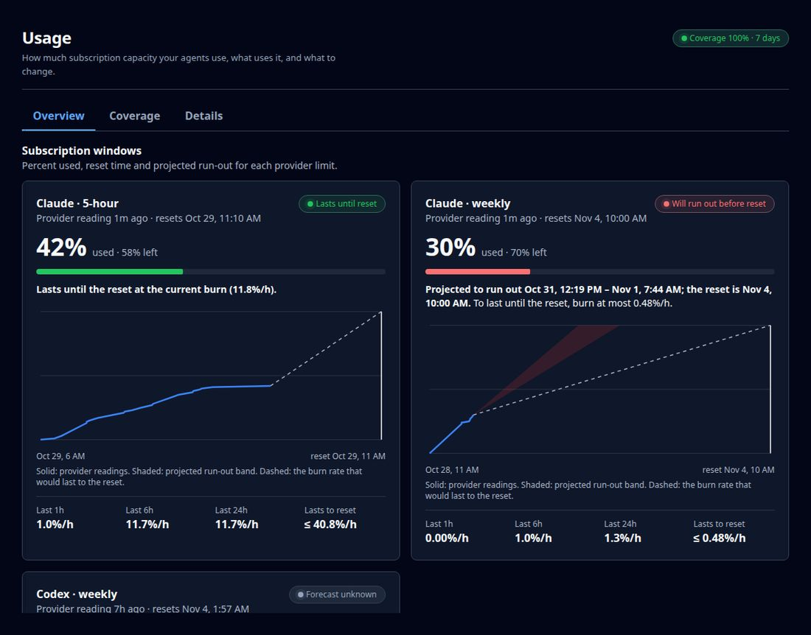
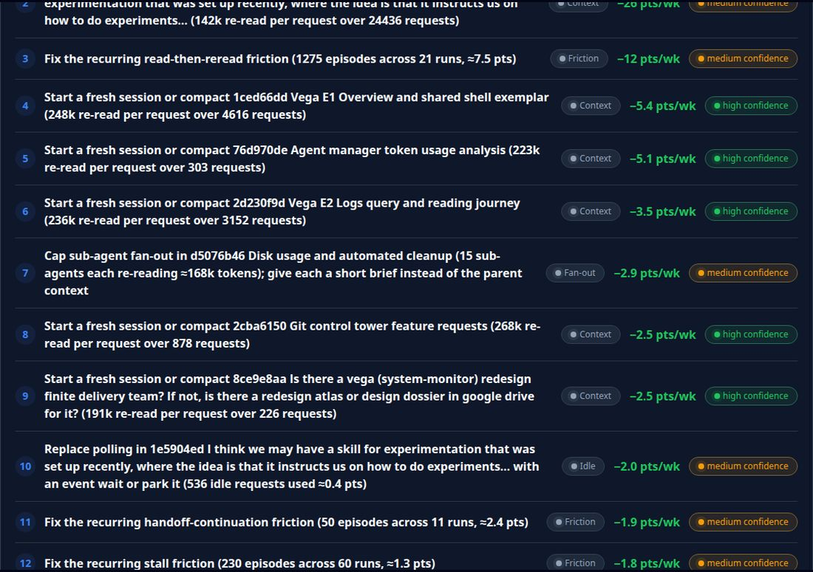
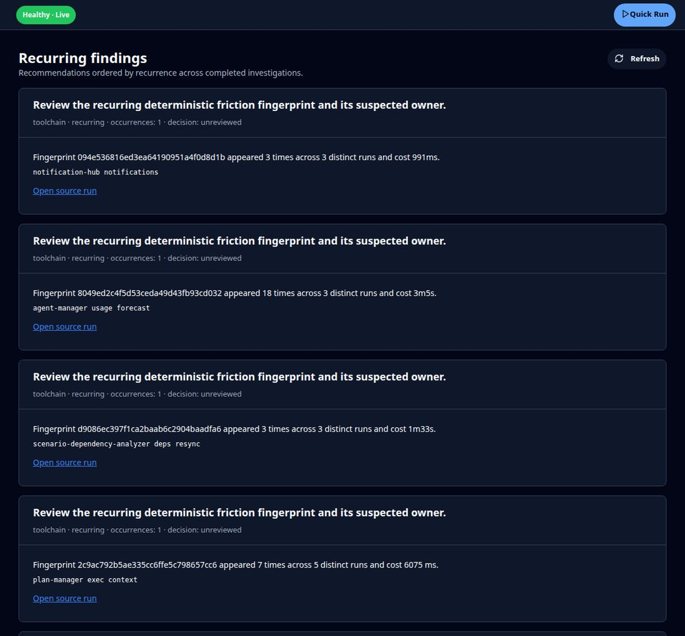
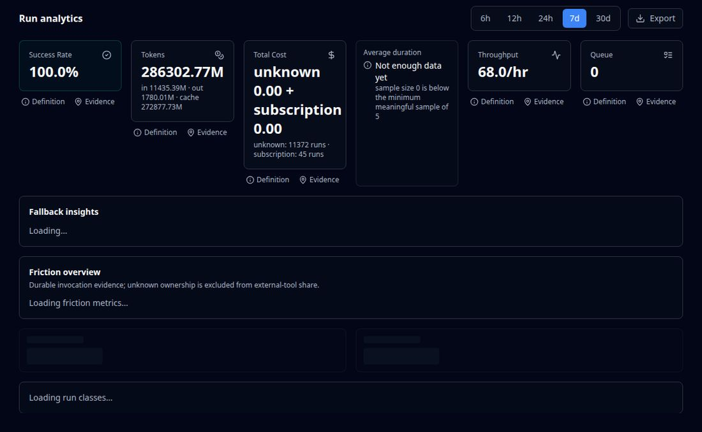
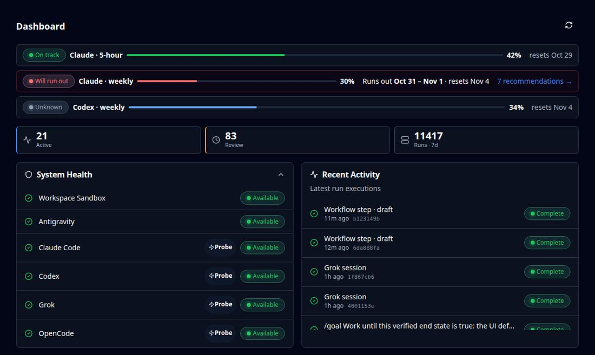
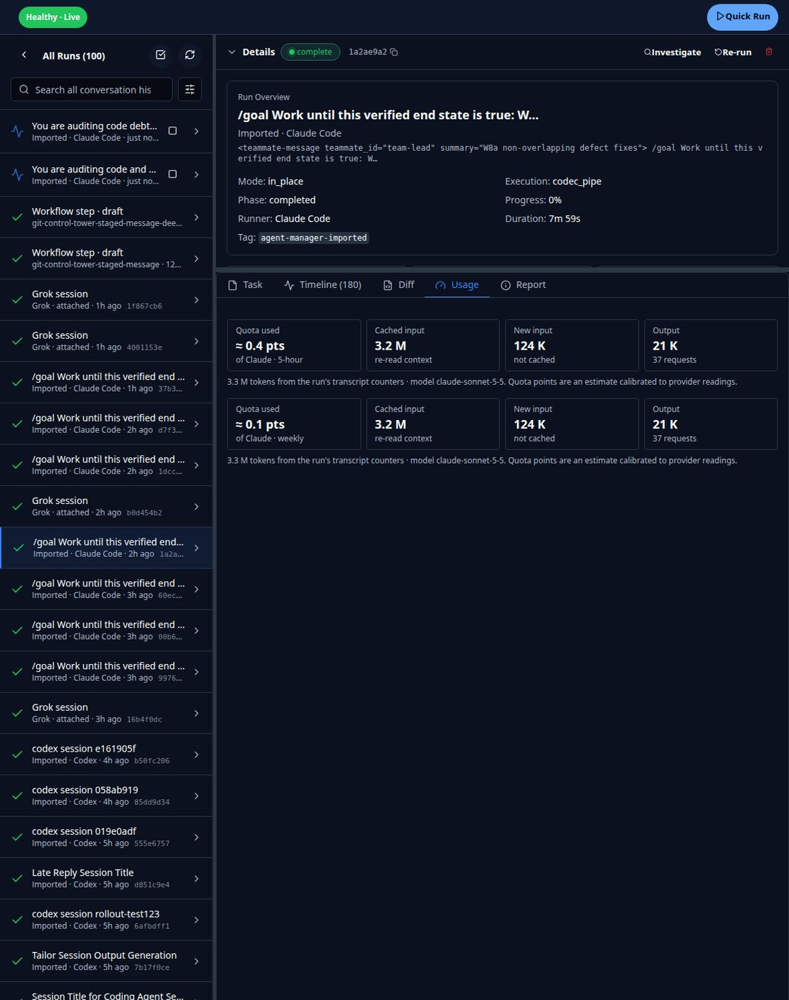
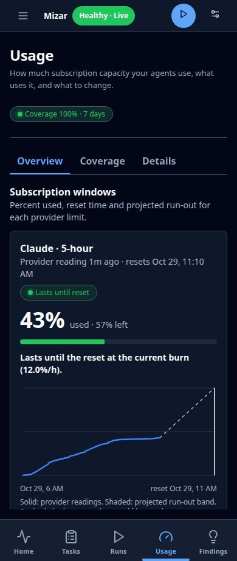

I captured every page that touches usage, friction and statistics on the live app, critiqued each one, and drew the improved version. Numbers in the Overview, Dashboard strip and notification mockups are live. Numbers in the Friction, Details, Runs and dashboard-tile mockups are placeholders for layout. Mockups keep Mizar's existing look and change only what's broken or missing; this follows the pass-1 rule that the UX is improved, not replaced. Thirteen decisions near the end need your answer before work starts.


| Agent manager token usage analysis operator session · 26 runs | 16.0 · 53% | |
| Disk usage and automated cleanup operator session · 16 runs | 8.0 · 27% | |
| Git control tower feature requests operator session · 7 runs | 5.6 · 19% | |
| 14 smaller items, under 0.1 pts each | 0.4 |
Mockup numbers come from the live forecast and recommendations at 13:31 UTC. The combined saving would be computed by the server so it never double-counts overlapping levers. Opening /usage without a notification shows the same layout without the red band, and the most urgent window is selected.

agent-manager usage forecast) is in small monospace at the bottom.| What keeps going wrong | Owner | Seen | Cost | |
|---|---|---|---|---|
| Agents re-read the same large files Read on files over 2k lines, repeated in one session · top: orchestration/service.go, App.tsx | agent behaviour | 1,275× · 21 runs | ≈ 7.5 pts | Suggest a fix |
agent-manager usage forecast fails, then a fallback is usedExit 1 "unknown flag --window", then retried as usage forecast with no flag | agent-manager | 18× · 3 runs | 3 m 5 s | Report bug |
search-hub query is slow or stallsMedian 41 s; 977 runs affected | search-hub | 977× · 89 runs | ≈ 1.2 pts · 4 h | Reported · knw-17932… |
test-genie runs artifact needs a retryFirst call returns 404 until the run is sealed | test-genie | 11× · 6 runs | 47 s | Report bug |
| Handoff after a stall Run parks with no wake event and is resumed by hand | agent-manager | 50× · 11 runs | ≈ 2.4 pts | Dismiss |
Mockup rows are illustrative; the descriptive lines ("Exit 1 …", "Median 41 s") are new server fields that summarise each fingerprint's evidence, so they need real derivation before I can promise their wording.

| Model | Requests | Tokens | Quota |
|---|---|---|---|
| gpt-6.1-terra | 8,402 | 18.2 B | ≈ 21 pts |
| claude-opus-5-5 | 2,977 | 7.9 B | ≈ 24 pts |
| claude-sonnet-5-5 | 1,640 | 3.1 B | ≈ 6 pts |
| Profile | Runs | Quota |
|---|---|---|
| No profile (interactive) | 412 | ≈ 49 pts |
| prompt-manager-delivery-orchestrator | 4 | ≈ 3.1 pts |
| git-control-tower-staged-message-deep | 12 | ≈ 0.2 pts |
The Details figures in this mockup are placeholders for layout. The real values come from the corrected token source (see the code debt section) and are not computed yet.



turns field becomes requests.Two read-only audits covered the Go API and CLI and the React UI. Pass 1 removed about 4,000 lines from the old analytics code but added three new packages. The largest debt sits in parallel paths that compute the same thing differently: two stats engines, two token sources, REST and RPC routes for the same operation, three pricing paths, and four places that show friction.
Orchestrator struct; createRun is 736 linesDetails sums each run's lifetime token total at the moment the run ends (invocationreadmodel/project.go:420). An imported session that began in August and ended today counts all of its August tokens in "this week". Two more defects add to it: 247 duplicate imported runs carrying 67 B tokens (most likely forked transcripts; unverified), and 4,917 imported runs with zero tokens counted as runs, which explains "68 runs/hr". "Average duration: sample size 0" is a separate bug: measures.go:303 never sets the denominator for run time, so the duration figure is always rejected as too small a sample. The same lifetime counters also feed the runner, profile, model, tool and cohort tables, cost, CLI run stats and the /stats/run-classes route.
| Candidate | Where | Change | Lines | Risk |
|---|---|---|---|---|
| Windowed totals from the transcript ledger | measures, invocation read model, KPISummary | Token and quota totals for a time window come only from transcript_usage, by request time. Lifetime counters stay for per-run views. Fix the run-time denominator. | −150…−250 | med |
| Second stats engine | internal/stats + REST /stats/operational, /fallback, CLI ops, UI operationalClient | Move fallback and model-failure insights into Measures procedures, then delete the engine and its schema. | −1,200 | med |
| REST and RPC routes for the same operation | handlers.go (120 routes), 55 RPCs with no caller here | One transport per operation (RPC). Move CLI and UI callers over, then delete the unused twin. Needs a search of other scenarios first. | −2,000…−4,000 | high |
| Routes with no caller anywhere | learning-retry, audit-transcript, canary arm/compare | Delete. | −300…−500 | low |
| One-shot start-up migrations | 16 migrate* functions in connection.go, including a 192-line table rebuild | Fold into the declarative schema; stop running pass-1 migrations on every start. | −400 | med |
| Findings generator and review fields | run_findings publisher, never-used decision and effectiveness fields | Replace with the Friction view (P2-D1). | −300…−600 | med |
| Temporary repair code (D-15) | transcriptindex/repair.go + repository methods | Confirm the 109 unknown-model rows aren't legacy rows, then delete. | −280 | low |
| Pricing paths | pricing.Service, usageattribution.Price fallbacks, PriceBook | One pricing owner, with the tier and cache defaults as a named fallback source. | −80 | med |
| Error and outcome classifiers | 3 hooks per runner codec; 3 outcome classifiers | One codec classifier and one outcome function. | −200 | med |
| Label helpers | alert.go ("5h"), CLI ("5-hour"), UI (5 copies) | One owner per side; same names everywhere. | −150 | low |
| Dead functions | about 10 functions in the API; about 20 UI exports, including all of stats/utils/calculations.ts | Delete, along with their tests. | −350 | low |
| Data fetching (UI) | 3 private apiRequest copies, 9 raw fetch calls; only Usage and Efforts set a deadline | One query client with a 30 s deadline; dashboard polling through refetchInterval. | −300…−400 | med |
| Details panels repeat "Where it went" | 16 panels in StatsPage.tsx; separate time window held in a module global | Keep the totals and two tables; drop about 6 duplicate panels; window kept in the URL (P2-D10). | −1,000…−1,500 | med |
| RunDetail and Model Pricing | RunDetail 726-line function; ModelPricingTab has its own copy of an existing dialog and sort header | Split RunDetail by tab; reuse the shared dialog and header; touch targets of at least 44px. | −400 | med |
| Three card styles and local copies of RCL components | local card/tabs/badge/dialog, raw tables in 14 files | Move the focus pages to RCL Card, Tabs and Table. | −200 | low |
| Formatters | duration ×3, tokens ×3, missing value "N/A" vs "—" | One lib/format.ts. | −120 | low |
| Test debt | 412 hand-written run literals; 26 unused fixture builders; 21 eslint errors; 9 live-database "tests" that never run | One run builder; fix the lint errors; move the live checks into a program. | −600 (tests) | low |
| Orchestrator size | createRun 736, runDurable 372, NewOrchestrator 298 lines | Split into named phases. Roughly line-neutral; worth it for review. | ±0 | med |
If everything except the transport change is done, the estimate is about −3,000 API and −2,500 to −3,000 UI non-test lines. With the transport change: −5,000 to −7,000 API. All figures are audit estimates, not measurements; each workstream re-measures before and after, as in pass 1.
The same model as pass 1: one orchestrator, sub-agents per workstream, effort docs updated first. Live checks happen in a browser, and every workstream ends with fewer lines than it started with. Waves A and B can run in parallel; C waits for A's corrected numbers.